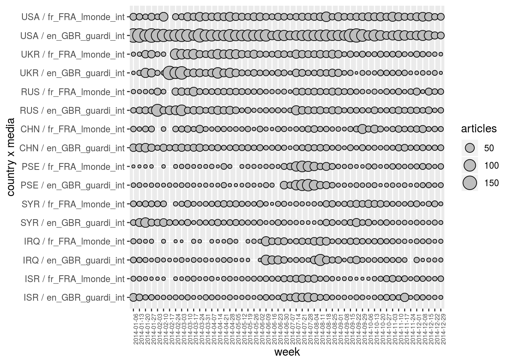

It is also possible to separate the data according to several dimensions (with not so many elements) at the same time in order to plot multidimensional variables. For example, the plot below gives the temporal evolution of articles for 8 countries and 2 newspapers.
geomedia %>%
filter.elm (week, format (name, "%Y") == "2014") %>%
arrange.elm (week, name) %>%
top_n.elm (country, articles, 8) %>%
arrange.elm (country, desc (articles)) %>%
filter.elm (media, name %in% c ("fr_FRA_lmonde_int", "en_GBR_guardi_int")) %>%
plot.var (articles, sep.dim.names = list (country, media), type = "point") +
theme (axis.text.x = element_text (angle = 90, size = 6))